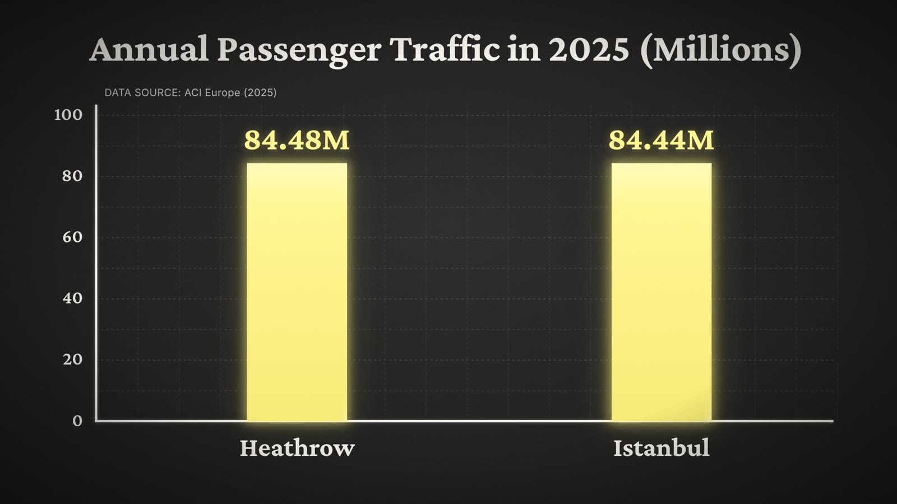

Heathrow handled 84.48 million passengers in 2025. Istanbul handled 84.44 million. Spread over a year, that gap comes to about 110 people a day.
The annual totals divided across 365 days. At this scale the two bars are almost the same length.
A 10-second motion graphic of the 2025 totals. Bars grow on a spring, numbers count up and land.
